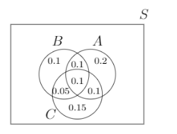
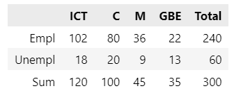
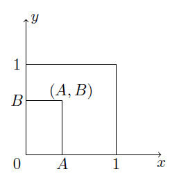

Øvelser
Øvelserne skal laves i løbet af undervisningen, men I må gerne kigge på dem derhjemme
Øvelse 1: Repetition¶
Lad \(A\) og \(B\) være to hændelser sådan at:
Find sandsynlighederne nedenfor. Angiv dine svar korrekte til én decimal.
-
Find \(P(A^c)\). (1)
- \(P(A^c)=0.7\).
-
Find \(P\left(A \cup B\right)\). (1)
- \(P\left(A \cup B\right)=0.4\).
-
Find \(P\left(A^c \cap B\right)\). (1)
- \(P\left(A^c \cap B\right)=0.1\)
-
Find \(P\left(A \cap B^c\right)\). (1)
- \(P\left(A \cap B^c\right)=0.2\).
-
Find \(P\left((A \cup B)^c\right)\). (1)
- \(P\left((A \cup B)^c\right)=0.6\).
-
Find \(P\left(A^c \cup B\right)\). (1)
- \(P\left(A^c \cup B\right)=0.8\).
Øvelse 2: Kast med fair terning¶
Jeg kaster en fair terning to gange og får to tal: \(X_1=\) resultatet af første kast, \(X_2=\) resultatet af andet kast.
-
Find sandsynligheden for at \(X_2=4\). (1)
- \(\dfrac{1}{6}\)
-
Find sandsynligheden for at \(X_1+X_2=7\). (1)
- \(\dfrac{1}{6}\)
-
Find sandsynligheden for at \(X_1 \neq 2\) og \(X_2 \geq 4\). (1)
- \(\dfrac{5}{12}\)
Øvelse 3: Venn og sandsynlighed¶
Lad \(A, B\) og \(C\) være tre hændelser med sandsynligheder givet:

Find sandsynlighederne nedenfor. Angiv dine svar som uforkortelige brøker.
-
\(P(A \mid B)\) (1)
- \(\dfrac{4}{7}\)
-
\(P(C \mid B)\) (1)
- \(\dfrac{3}{7}\)
-
\(P(B \mid A \cup C)\) (1)
- \(\dfrac{5}{14}\)
-
\(P(B \mid (A, C))\) (1)
- \(\dfrac{1}{2}\)
Øvelse 4: Flere fly¶
Sandsynligheden for at et regelmæssigt planlagt fly afgår til tiden er \(0.83\); sandsynligheden for at det ankommer til tiden er \(0.82\); og sandsynligheden for at det afgår og ankommer til tiden er \(0.78\). Find sandsynligheden for at et fly (angiv dine svar korrekte til fire decimaler):
-
Ankommer til tiden, givet at det afgik til tiden (1)
- 0.9398
-
Afgik til tiden, givet at det har ankommet til tiden (1)
- 0.9512
-
Ankommer til tiden, givet at det ikke afgik til tiden (1)
- 0.2353
Øvelse 5: Uafhængighed og kontingenstabeller¶
En undersøgelse blev gennemført for at bestemme beskæftigelsesgraden for nyligt dimitterede ingeniørstuderende. Undersøgelsen blev gennemført ét år efter dimission og blev lavet for ICT-ingeniører, Bygningsingeniører, Maskiningeniører og Global Business Engineers. De dimitterede blev klassificeret i en af to beskæftigelseskategorier: (1) beskæftiget/studerende og (2) arbejdsløs. 40% af respondenterne havde studeret ICT-ingeniør og af disse var 85% beskæftiget/studerende. Af alle respondenterne var 20% arbejdsløse. Af de 100 tidligere bygningsingeniørstuderende, der deltog i undersøgelsen, var 20% arbejdsløse. Andelen af arbejdsløse maskin- og bygningsingeniørstuderende var den samme, og undersøgelsen inkluderede præcis 9 arbejdsløse maskiningeniørstuderende. 300 studerende deltog i undersøgelsen.
-
Baseret på disse oplysninger, konstruer en 2 x 4 kontingenstabel for undersøgelsesresultaterne.

Teknisk set er summerne og totalerne ikke en del af kontingenstabellerne. De tilføjes for at gøre det nemmere at beregne sandsynlighederne.
-
Hvad er sandsynligheden for at en arbejdsløs respondent er en tidligere ICT-studerende? Angiv dit svar som en uforkortelig brøk. (1)
- \(\dfrac{3}{10}\)
-
Hvis en respondent er arbejdsløs, hvad er sandsynligheden for at respondenten var en GBE-studerende? Angiv dit svar som en uforkortelig brøk. (1)
- \(\dfrac{13}{60}\)
-
Er det at være arbejdsløs uafhængigt af at være en tidligere ICT-studerende?
Du kan sammenligne enhver a priori sandsynlighed med den tilsvarende a posteriori sandsynlighed. F.eks. fandt du en a posteriori sandsynlighed på \(\dfrac{3}{10}\) i (b). Den a priori sandsynlighed er \(\dfrac{2}{5}\). Da de to sandsynligheder ikke er lige store, er de to hændelser afhængige:
\(P(\text{ICT} \mid \text{Arbejdsløs}) = \dfrac{3}{10} \neq \dfrac{2}{5} = P(\text{ICT})\)
Øvelse 6: Bayes' teorem¶
Sygdom \(A\) forekommer med sandsynlighed 0.1, og sygdom \(B\) forekommer med sandsynlighed 0.2. Det er ikke muligt at have begge sygdomme. Du har en enkelt test. Denne test rapporterer positiv med sandsynlighed 0.8 for en patient med sygdom \(A\), med sandsynlighed 0.5 for en patient med sygdom \(B\), og med sandsynlighed 0.01 for en patient uden sygdom - kald sidstnævnte hændelse \(W\). Ved at angive dit svar korrekt til fire decimaler, hvis testen kommer tilbage positiv, hvad er sandsynligheden for at du har enten:
-
Sygdom \(A\) (1)
- \(0.4278\)
-
Sygdom \(B\) (1)
- \(0.5348\)
-
Ingen sygdom (1)
- \(0.0374\)
Udfordringsøvelser¶
Udfordringsøvelse 1¶
Brug kun tid på denne øvelse, hvis du har tid tilbage efter at have fuldført de andre øvelser, og du fandt dem for nemme. Problemet er taget fra eksamen i Stokastisk Modellering og Processer (IT-SMP1) på 6./7. semester.
Du vælger et punkt \((A, B)\) ensartet tilfældigt i enhedskvadraten \(\{(x, y): 0 \leq x, y \leq 1\}\).

Hvad er sandsynligheden for at ligningen
har reelle løsninger?
Udfordringsøvelse 2: Binomisk Sætning¶
Binomisk udvidelsesformel:
hvor \(\binom{n}{k}=\frac{n!}{k!(n-k)!}\) er den binomiske koefficient Den generelle term i den binomiske udvidelse:
Vigtig egenskab: Antallet af termer i den binomiske udvidelse af \((a+b)^n\) er \(n+1\).
-
Skriv den binomiske udvidelse af \((a+2 b)^4\). Hint: Du kan bruge Pascals trekant til nemt at skrive de binomiske koefficienter ned.
- \(a^4+8 a^3 b+24 a^2 b^2+32 a b^3+16 b^4\)
-
Find den 5. term i udvidelsen af \((\sqrt{x}+x)^{10}\)
- \(210 x^7\)
-
Bestem termen, der indeholder \(x^6\) i udvidelsen af \(\left(x+\frac{1}{2} y\right)^9\).
- \(\frac{21}{2} x^{6} y^{3}\)
Udfordringsøvelse 3: Monty Hall Problemet¶
Monty Hall problemet er et berømt sandsynlighedspuslespil baseret på et spilshow-scenarie. Sådan fungerer det:
- Du præsenteres for tre døre: bag en dør er en bil (præmien, du ønsker), og bag de to andre døre er geder (som du ikke ønsker).
- Du vælger en dør (sig, Dør 1).
- Værten, som ved, hvad der er bag hver dør, åbner en anden dør (sig, Dør 3), som har en ged bag sig.
- Du får derefter valget mellem at holde fast ved dit oprindelige valg (Dør 1) eller skifte til den resterende uåbnede dør (Dør 2).
Spørgsmålet er: Skal du holde fast ved dit oprindelige valg, skifte til den anden dør, eller betyder det ikke noget? For at løse dette problem kan vi analysere sandsynlighederne for at vinde bilen baseret på din strategi (at holde fast eller skifte).
-
Hvad er sandsynligheden for at vinde bilen, hvis du holder fast ved dit oprindelige valg? (1)
- \(\dfrac{1}{3}\)
-
Hvad er sandsynligheden for at vinde bilen, hvis du skifter til den anden dør? (1)
- \(\dfrac{2}{3}\)
-
Hvad ville sandsynligheden for at vinde være, hvis der var 100 døre, med 1 bil og 99 geder, og efter du vælger en dør, åbner værten 98 døre med geder bag dem? (1)
- \(\dfrac{99}{100}\)
Sjov Fakta: Dette problem førte til meget debat om sandsynlighed og beslutningstagning. Problemet blev populært af Marilyn vos Savant i hendes "Ask Marilyn" kolonne i Parade magasin i 1990, hvilket førte til udbredt diskussion og analyse.
(YT 3 min) Monty Hall Problem - AsapSCIENCE